西国三十三箇所、結願しました [旅行記]
〜前記事の続きです〜
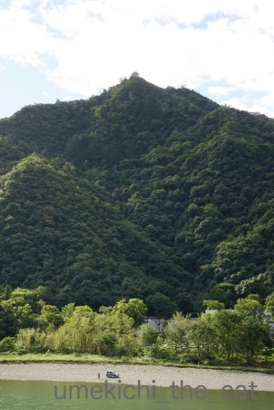
翌朝はすっきりと快晴！！
昨日は雨に煙っていた金華山と岐阜城もくっきり見えます＾＾
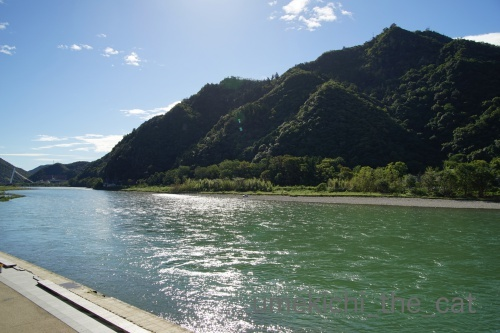
宿の目の前の長良川の流れも美しく![[ぴかぴか（新しい）]](https://blog.ss-blog.jp/_images_e/150.gif) 水の色が独特な色をしています。
水の色が独特な色をしています。
この日は車を借りて旅の目的地、谷汲山華厳寺に向かいました。
華厳寺は西国三十三箇所の33番目の札所。結願の地です。
結願の地を最後にとっておいたというわけではなく
行きにくいところなのでこうなりました。
霊場の中の唯一つの岐阜県のお寺。（他は畿内2府3県内です）
良いお天気だったのでドライブ日和でもありましたよ＾＾
途中道の駅に寄って柿を買ったりソフトクリームを食べたり。
華厳寺へ向かう途中の本巣のあたりは柿畑がたくさん。富有柿が収穫間近の様でした。
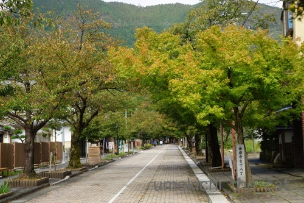
岐阜市内中心部から寄り道しながらでも１時間くらいで華厳寺に到着。
車を止めてお土産屋さんが並んだ参道を1キロ弱歩きますよ。
これまで訪れた三十二箇所の霊場に想いを馳せながら・・・・
と行きたいところでしたが暑くて暑くて感慨に浸っている余裕はありませんでしたw

仁王門に到着。

巨木がたくさんありました。
昨日訪れた木知原（やながあったところ）あたりは先日の台風21号の被害か
折れた木がたくさんあったのですがここはあまり被害は見当たらず。
なによりでした＾＾

本堂にお参りして御朱印をいただきました。
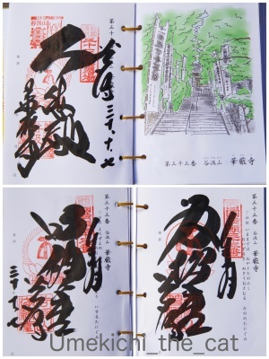
華厳寺でいただく御朱印は３種。
向かって左上から
「大悲殿」（本堂のこと。観音様のいらっしゃるところという意味です）
右下
「笈摺堂」（笈摺：おいずる＝巡礼時に着る袖なしの羽織りみたいな衣装、を納めるところ）
左下
「満願堂」（三十三箇所満願の報告をするところ）
となります。
私たちは笈摺は着てませんよw
四国巡礼では定番のようですが西国三十三箇所では着ている方は時々見かける程度で
みなさん持ち歩いているようです。
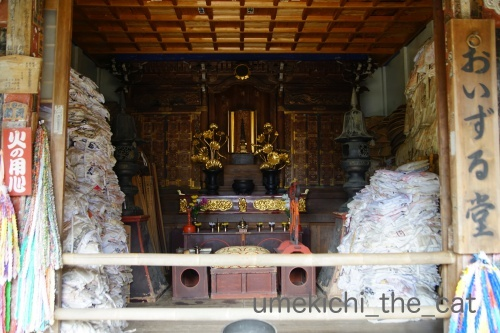
笈摺堂
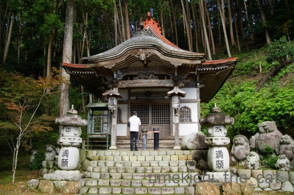
満願堂
無事に回り終えたご報告をして三十三箇所の巡礼が終わりました。
平成25年から回り始めて５年。いろいろなところへ行きました。
印象に残っているところもあればそうでないところも(^_^;)
このお話はまた後日しますね。
結願して身も心も清々しくなったのでお腹が空きました。
岐阜市内へ戻って車を返してごはん！ビール！！

ランチは名古屋が本店の味噌煮込みうどんの店山本屋本店。
味噌煮込みうどん本格的なものは食べたことがなかったので一度食べてみたかった！
サラダみたいなお漬物がおかわり自由なのも嬉しいです。
これをアテにビールを飲みながらうどんを待ちました＾＾
コクのあるお味噌の味、美味しかったです。
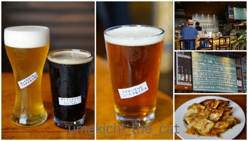
もう一箇所立ち寄ったのがエールエール ギフというクラフトビールのお店。
名古屋にあるワイマーケットブルーイングの直営店です。
私が頼んだのは「金シャチビール プラチナエール」
軽い喉ごしで暑い日にぴったりのごくごく飲める系のビールでした。
おっとが頼んだのは「ワイマーケット ムーンライトイエロースカイ」
「ワイマーケットニュートラルIPA」
どちらだったか曖昧なんですが「ムーンライト〜」は山椒が効いたビールで美味しかったです。
意外な組み合わせのようですが黒いビールに山椒が合うんですよ！
このお店はなぜが餃子が無料でいただけました＾＾（週末限定みたいです）
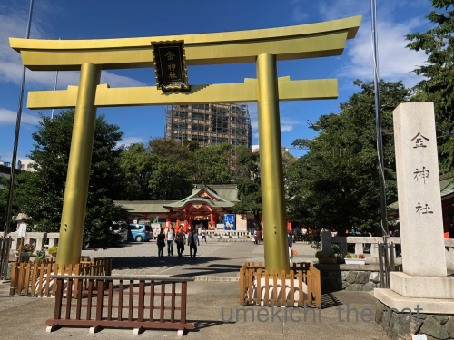
帰りの電車の乗る前に金神社にお参り。
信長公の金ピカ像に始まって金ピカの鳥居に見送られた岐阜の旅でした。
追記
駅弁を買って帰ってお夕飯にしよう！
それなら名古屋っぽい駅弁があるかもしれない名鉄岐阜駅で見てみよう！と行ってみたのですが・・・
駅弁売り場見当たらず。
JR岐阜駅は夕方だったので駅弁売り場は店じまい。
ちょっと心残りの駅弁でした。残念。
 ↑ガブッと一押し↑
↑ガブッと一押し↑

私たちが帰宅して梅吉は大喜びで走り回っていましたよ。
遊んで欲しくて仕方がないw
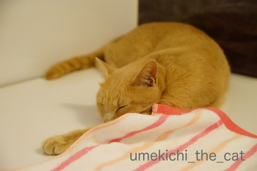
遊び疲れた後はおかーさんとまったりお風呂タイムでした＾＾
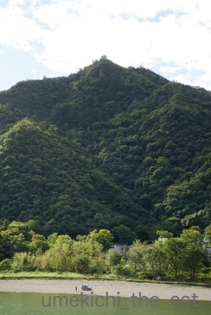
翌朝はすっきりと快晴！！
昨日は雨に煙っていた金華山と岐阜城もくっきり見えます＾＾
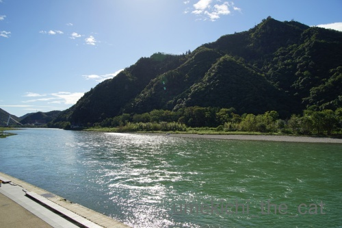
宿の目の前の長良川の流れも美しく
この日は車を借りて旅の目的地、谷汲山華厳寺に向かいました。
華厳寺は西国三十三箇所の33番目の札所。結願の地です。
結願の地を最後にとっておいたというわけではなく
行きにくいところなのでこうなりました。
霊場の中の唯一つの岐阜県のお寺。（他は畿内2府3県内です）
良いお天気だったのでドライブ日和でもありましたよ＾＾
途中道の駅に寄って柿を買ったりソフトクリームを食べたり。
華厳寺へ向かう途中の本巣のあたりは柿畑がたくさん。富有柿が収穫間近の様でした。
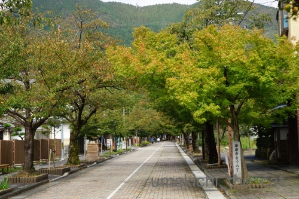
岐阜市内中心部から寄り道しながらでも１時間くらいで華厳寺に到着。
車を止めてお土産屋さんが並んだ参道を1キロ弱歩きますよ。
これまで訪れた三十二箇所の霊場に想いを馳せながら・・・・
と行きたいところでしたが暑くて暑くて感慨に浸っている余裕はありませんでしたw

仁王門に到着。

巨木がたくさんありました。
昨日訪れた木知原（やながあったところ）あたりは先日の台風21号の被害か
折れた木がたくさんあったのですがここはあまり被害は見当たらず。
なによりでした＾＾

本堂にお参りして御朱印をいただきました。
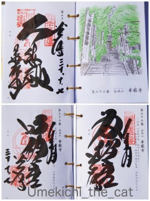
華厳寺でいただく御朱印は３種。
向かって左上から
「大悲殿」（本堂のこと。観音様のいらっしゃるところという意味です）
右下
「笈摺堂」（笈摺：おいずる＝巡礼時に着る袖なしの羽織りみたいな衣装、を納めるところ）
左下
「満願堂」（三十三箇所満願の報告をするところ）
となります。
私たちは笈摺は着てませんよw
四国巡礼では定番のようですが西国三十三箇所では着ている方は時々見かける程度で
みなさん持ち歩いているようです。
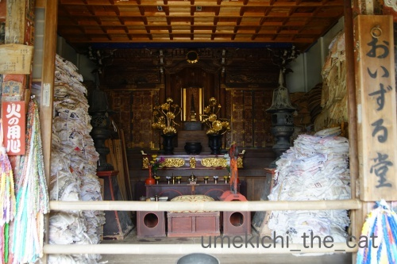
笈摺堂
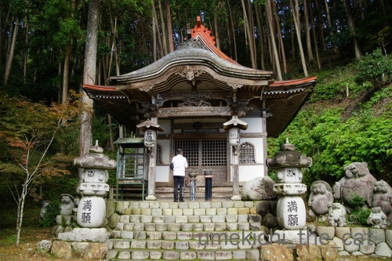
満願堂
無事に回り終えたご報告をして三十三箇所の巡礼が終わりました。
平成25年から回り始めて５年。いろいろなところへ行きました。
印象に残っているところもあればそうでないところも(^_^;)
このお話はまた後日しますね。
結願して身も心も清々しくなったのでお腹が空きました。
岐阜市内へ戻って車を返してごはん！ビール！！

ランチは名古屋が本店の味噌煮込みうどんの店山本屋本店。
味噌煮込みうどん本格的なものは食べたことがなかったので一度食べてみたかった！
サラダみたいなお漬物がおかわり自由なのも嬉しいです。
これをアテにビールを飲みながらうどんを待ちました＾＾
コクのあるお味噌の味、美味しかったです。
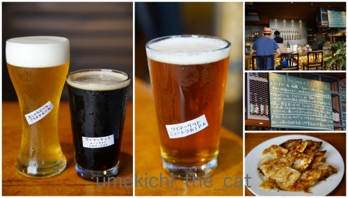
もう一箇所立ち寄ったのがエールエール ギフというクラフトビールのお店。
名古屋にあるワイマーケットブルーイングの直営店です。
私が頼んだのは「金シャチビール プラチナエール」
軽い喉ごしで暑い日にぴったりのごくごく飲める系のビールでした。
おっとが頼んだのは「ワイマーケット ムーンライトイエロースカイ」
「ワイマーケットニュートラルIPA」
意外な組み合わせのようですが黒いビールに山椒が合うんですよ！
このお店はなぜが餃子が無料でいただけました＾＾（週末限定みたいです）
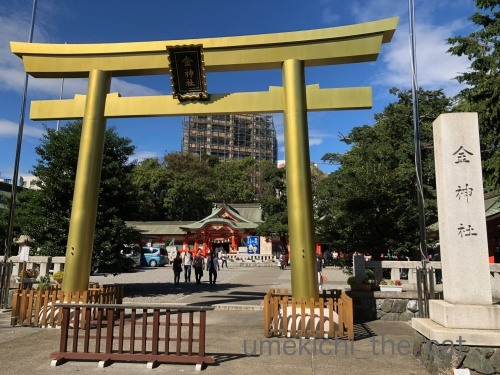
帰りの電車の乗る前に金神社にお参り。
信長公の金ピカ像に始まって金ピカの鳥居に見送られた岐阜の旅でした。
追記
駅弁を買って帰ってお夕飯にしよう！
それなら名古屋っぽい駅弁があるかもしれない名鉄岐阜駅で見てみよう！と行ってみたのですが・・・
駅弁売り場見当たらず。
JR岐阜駅は夕方だったので駅弁売り場は店じまい。
ちょっと心残りの駅弁でした。残念。

私たちが帰宅して梅吉は大喜びで走り回っていましたよ。
遊んで欲しくて仕方がないw
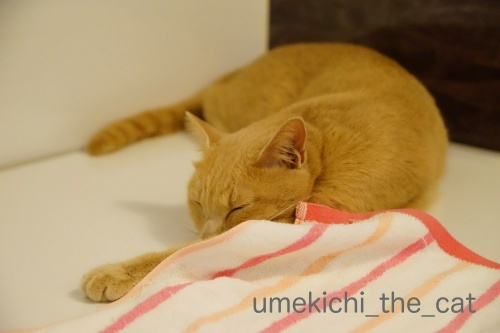
遊び疲れた後はおかーさんとまったりお風呂タイムでした＾＾

カフェオレ色の梅吉

梅吉 2023年8月10日 永眠


梅吉と出会った譲渡会

犬猫の理由なき殺処分ゼロ
妄想広告
UMEKICHI 光

爆発的に早い！
時々攻撃的！
Thanks to Mr.Boss365
爆発的に早い！
時々攻撃的！
Thanks to Mr.Boss365

スッキリ晴れてとても気持ち良さそうに見えますが
暑かったんですねぇ^^;
華厳寺、凜とした空気感がさすが西国三十三箇所のお寺ですねぇ＾＾
巨木達が被害に遭ってないのもやはり華厳寺のパワーの
おかげでしょうか(^O^)
梅吉さん、お父さんとお母さんが帰ってきてとても嬉しかったんですねぇ(^-^)
安心して気持ちよさそうにちぃさんとお風呂に入ってる姿が
愛おしいですねぇ(^_^)v
by ニッキー (2018-10-12 15:47)
5年かけて33箇所はすごいです。満願堂で終わるのもいかにも縁起が良さそうですが私的にはやっぱり金ピカの鳥居がツボです。
箱から覗く梅吉さんが愛らしいお顔をしてますね~。
by zombiekong (2018-10-12 18:58)
青空の中、気持ち良く！！と思ったら
暑すぎましたか(;^_^A
ビールが美味しく感じますね♪
山本屋本店！美味しそうです！
お土産でいただいたことがあるくらいなので
お店で食べてみたいです♪
梅吉さん♪ 大喜びだったのですね！
遊び疲れた後のまったりタイム！
幸せな時間ですね！
by きぃ (2018-10-12 19:07)
味噌煮込みうどんは汗をかきながら食べるんです。
これからの季節にピッタリのうどんですね。
名古屋は味噌ばっかりです(^^;
by riverwalk (2018-10-12 20:18)
結願おめでとうございます＼(^o^)／
不便なところにあるお寺が多いですから時間がかかりますよね。
クラフトビールが五臓六腑にしみわたったことでしょう♪
金ぴかに始まり金ぴかに終わるめでたい旅で何よりです。
梅吉さん、どこいってたにゃ～遊ぼうにゃ～テンション上がっちゃいますよね^^
by ゆきち (2018-10-12 21:11)
昔から変わらず佇むお寺の風景に癒されます。
山本屋の味噌煮込み、美味しいのですがうどんがメチャ硬いですよねー。^^;
駅弁の購入は場所と時間が決めてですね。
11時か18時くらいに新幹線の駅のホーム上の売店、もしくは出札口を出たところにある売店で購入できる確率が高いです、経験上。^^;
梅吉さん、お留守番お疲れ様でしたー。
by yes_hama (2018-10-12 21:39)
三十三カ所の霊場参りお疲れ様です！
お寺は神社と違って1寺で複数の御朱印があるところが多いので結構な出費になりますね(^^)
by ma2ma2 (2018-10-12 21:54)
そうなんです＾＾
みつばち”マーヤ”です( ´艸｀)
結願おめでとうございます(*´ω｀*)
達成感ですね
梅吉くん、お留守番頑張ったね～♡
帰宅が嬉しくて、走り回るなんて可愛くてたまりませんね～♡＾＾
by マーヤ (2018-10-13 01:05)
こんばんは。
西国三十三箇所・結願！！おめでとうございます！！
５年？根気よく続けられた修行は素晴らしいです。見習いたい！！
満願されての味噌煮込みうどんは、絶対に美味しいハズです。
食べたい？でも何で岐阜で名古屋名物？
小生、黒いビールに目がないので、山椒？混ぜてみようかな・・・
梅吉君もダンボール箱から、おめでとう＆遊ぼー？ですね！？(=^･ｪ･^=)
by Boss365 (2018-10-13 01:09)
結願を無事に終え、身を清めた後のお食事は最高の気分だったのではなかったでしょうか！特にビールは(^^)
梅吉さん、帰りを待ちわびていて嬉しかったんでしょうね。
by kou (2018-10-13 06:45)
梅吉さん、嬉しそう^^楽しいね^^
by ニコニコファイト (2018-10-13 06:51)
お金持ちになれそうな神社ですね＾＾
by ぽちの輔 (2018-10-13 07:24)
西国三十三箇所、結願♪ おめでたいですね〜♡
5年がかり?! なんだか偉業ですよ!!!
ちぃさんご夫婦にも、梅吉さんにも、大きな福が舞いこみそう(^O^)／
by のらん (2018-10-13 08:15)
名古屋メシいいな～♪ ついついマンジャーレに走りがち・・・ちぃさんの満願へ幸福を育む姿が眩しい・・・。
おりこうさんでお留守番していても、やっぱりパパ＆ママが還って来ると嬉しいのね！可愛い～！ヽ(〃^・^〃)ﾉ ﾁｭｯ♪
by Ginger (2018-10-13 11:30)
5年掛けて三十三箇所。おめでとうございます！すごいです～(≧▽≦)
5年前は梅吉くんはまだ生まれていなくて。
そう思うと、ちぃさんの巡礼の目的も少しずつ変わってきたのかな？
なんて・・・私も感慨深いです。
お留守番の後は、普段よりもストーカー度が増しますね。
安心して眠る姿が愛おしいです♪
by emi (2018-10-13 17:12)
西国三十三箇所、結願おめでとうございます。
青々とした山々、独特な色の長良川が美しい～！
爽やかに見えますが、暑い日だったんですか。
本格的な味噌煮込みうどん、美味しそう～～。
大喜びの梅吉さん、待ちかねてましたね～可愛い＾＾
by sana (2018-10-13 17:38)
5年間の三十三箇所の結願おめでとうございます。
達成感があるでしょうね。
巨木の写真でパワーを（ご相伴させて）頂きました。
名古屋の味噌煮込みうどん、
鍋の蓋にうどんを移して頂くのがルールだと教えられました。
金ぴかの金神社、これで金運が上昇ですね（笑）
梅吉さん、大喜びで走り回る姿が眼に浮かぶようです。
by kiki (2018-10-13 18:49)
西国三十三箇所、結願
おめでとうございます。
長良川の水の色キラキラしてきれいです。
達成後のおうどんとビールは
めちゃくちゃ美味しかったでしょうね♪
by ふにゃいの (2018-10-14 15:23)
見上げる大木の写真に圧倒。
御朱印もたくさん集められたのですね^^
浅草の今戸神社は、招き猫の御朱印帳なんですよ〜（持ってないけど）
味噌煮込みうどん懐かしい〜！
今や、久々すぎてどっちの山本さんがどっちだったかうろ覚えです^^;
クラフトビールのお店もすてき！最近増えましたね。
駅弁は残念でした・・・
by Ja-Kou66 (2018-10-15 00:31)
ニッキーさん＞
カラリとした暑さではなくムシっとした暑さでした。
残念ながら秋の空気は満喫できずw
華厳寺は巡礼結願のお寺でありながら
地元の方もお子さんの100日参りに訪れているような
良い雰囲気のお寺でしたよ＾＾
旅行から帰って来た時の梅吉の喜び方は本当に可愛くて愛おしいです！！
帰ってくるたび一人にしてごめんね、と思いつつも旅行もやめられません(^_^;)
zombiekongさん＞
色々予定を考えて無理せず巡っていたら５年もかかっちゃいました。
関西に住み始めた翌年からことだったので
私にとっては関西を知る旅でもあったかな＾＾
梅吉は猫らしからず喜びをちゃんと表現してくれるので
本当に可愛いです（自慢）
きぃさん＞
本当に暑い日でした！
山っぽいところなのでからりとしているかと思ったらムシっとw
思えば岐阜も暑い土地ですものね。
山本屋本店、お店にお土産用のがありました！
お土産用にお漬物はついてないのかな？
お店で食べるお漬物美味しいですよー＾＾
riverwalkさん＞
真夏の味噌煮込みうどんは良い暑気払いになりそうですね！
もちろん冬は体もあったまる♪
お味噌には八丁味噌が？と思ったら
白味噌と赤味噌の独自ブレンドのようで・・・
お味噌は体に良い発酵食品なので積極的に摂取したいです！！
ゆきちさん＞
不便なところはおっそろしく不便なので（我が家からは）
京都市内をまとめて回った後は
一ヶ所、あるいは近いお寺をまとめて二ヶ所のペースでした。
私にとっては関西を知る良いきっかけの旅でもありました。
寺社の持つ重みが北海道とは全然違う・・・
クラフトビールのお店には箕面のビールもありましたよ♪
箕面ビール、実はまだ飲んだことありませんけど・・・
yes_hamaさん＞
山本屋本店の麺、煮込んでもふやけないような仕様なのでしょうかw
讃岐うどんのコシとも違った硬さではありましたねー。
駅弁情報ありがとうございます！流石にお詳しい！！
なるほど！時間も購入場所もぜんぜんダメだったのですね、私たち。。。
機会があったら次はゲットしてみたいです。
駅弁はダメでしたが岐阜らしく「鶏ちゃん」ゲットして来ましたよ( ´艸｀)
ma2ma2さん＞
そうなんです！
華厳寺は有無を聞かれることなく３御朱印でワンセットでした。
いただくつもりだから良かったんですけれど・・・
御朱印プラス拝観料を納めるところは二人で行くと結構な出費です。
ご利益、ないなんて言わせないwww
マーヤさん＞
５年かかったな、と感慨と達成感と＾＾
三十三ヶ所の札所じゃなかったら行かないような土地も多かったので
私にとっては関西を知る良い旅でした。
梅吉は猫らしくなく喜びがストレートなんですよ(≧▽≦)
Boss365さん＞
根気よく、とお褒めの言葉をいただくほどのことではないのですが(〃▽〃)
旅行を兼ねての札所巡り、関西を知る良い機会でもありました。
今と昔とでは栄えていた場所が違ったのだなと感じることも多かったです。
岐阜名物、鮎を堪能して後は何が？？？と探すと
岐阜市内では特に目立ったものはなく・・・
文化的には名古屋なので飲食店も名古屋系の店が多かったですよ＾＾
で、味噌煮込みうどんになりました。台湾まぜそばの店も多かったです。
ビールに山椒、書き忘れていましたがゆずのピールも効いていました！
オリジナルブレンド！？どうなるんだろう0(≧▽≦)0
kouさん＞
普段は食べない朝ごはんを宿でしっかりいただいたのに
結願の後はなぜかお腹が空いて・・・
精進落としの味噌煮込みうどんとビールでした＾＾
暑い中での熱いうどんと冷たいビールが美味しかったです！
ニコニコファイトさん＞
梅吉は喜びの表現がストレートなんですよ＾＾かわいいでしょ(^_－)☆
ぽちの輔さん＞
はい！！ぜひぜひご利益が欲しいですwww
のらんさん＞
楽しみながらの偉業も良いものですね＾＾
山奥にでっかいお寺があったりして
関西というのは奥深い文化の地だなぁと改めて思いました。
お参りしてはビールを楽しんでいましたが
そんな私達に神様は福を届けてくれるかしら・・・
Gingerさん＞
いえいえ、私たちも出かける際はご飯情報をしっかり調べてからだったので
お参り半分マンジャーレ半分・・・（半分じゃないかもw）
梅吉は喜びの表現がストレートで。心からかわいいなぁと思います（ｳﾙｯ・・・
emiさん
楽しみながら無理せず巡っていたら５年もかかってしまいました(^_^;)
この行程を徒歩で巡っていた人たちもいたのだと思うとびっくりです。
大体のお寺が山の上に建っているのに・・・
emiさんのコメントで改めて気づいた！
５年前は梅吉は生まれてなかったんだって。
そう思うと本当に感慨深いわ。。。
巡礼の（私たちの場合そんなに大げさなものじゃないけど）途中に家族になった子
授かりものかしら(^_－)☆
sanaさん＞
長良川、川自体も良く整備され美しく保たれた環境も
本当に好ましい川でした＾＾
街の真ん中を流れる川があんなに綺麗なんて驚きでもありました。
味噌煮込みうどんは八丁味噌だと思っていたのですが
このお店のは赤味噌白味噌を使ったお店独自ブレンドなのだとか。
コクのあるお味、美味しかったです！！
kikiさん＞
無事に達成しました＾＾
願掛けなど大層なものではなく「いろんなとこ、行けるよね」と
軽〜い気持ちではじめましたが想像以上にいろんなところに行けました^^
私は熱いのが割と得意なので蓋取り皿はしませんでしたが
そうやって召し上がっている方も居ましたよ！よくご存知ですねー。
金ピカ神社にはぜひぜひご利益をお願いしたいです！！
ふにゃいのさん＞
長良川の水の色はくすんだようなエメラルド色（？）で
本当に綺麗でした＾＾
ゴミがほとんど見当たらないのも
岐阜の方々が川を大切にしている気持ちが伝わってくるようでしたよ。
暑い日にあつ〜いうどんと冷たいビール体に沁みましたー。
Ja-Kou66さん＞
招き猫の御朱印、気になります！
最近は凝った御朱印をするところや
季節ごとに変えたりするところも出て来たので
厳選していただくようにしています＾＾
そうそう！味噌煮込みうどんの「山本」さんは二つあるんですよね＾＾
「大阪王将」と「餃子の王将」みたいなものですねwww
昔、地ビールと呼んでいた頃は正直あまり美味しくなかったと思うのですが
最近のクラフトビールは美味しくなりましたよね＾＾
ビールキットを買って自分で作ったことがあるのですが
すごーく美味しくないビールが出来たおもひでが・・・
by ちぃ (2018-10-15 20:04)
見事に結願されたのですね^^
やり遂げた感もあるのではないでしょうか。
清々しい気分で飲んだビールは
絶対美味しかったに違いない！！
by リュカ (2018-10-16 09:55)
リュカさん＞
楽しく巡りましたよ！
結願するのはもっと先になるかな、と思っていたんですが
平成の世が終わる前に巡り終えて良い区切りになったかも＾＾
暑い日のビールは格別だったけど酔っ払いながら歩くには暑すぎたわwww
by ちぃ (2018-10-16 15:56)